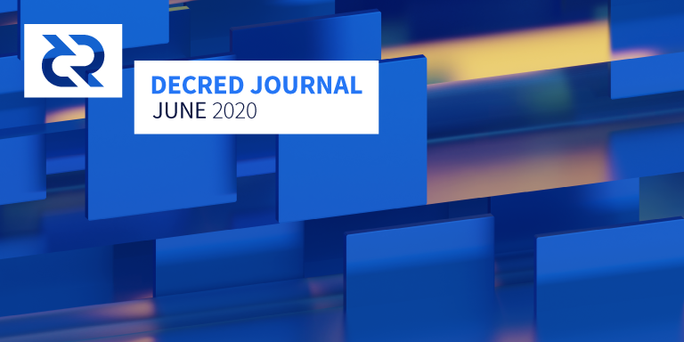

Decred月报 – 2020年6月

图片: Ambience at 3000K @saender
六月亮点：
- 适用于Android和iOS的移动应用已升级到v1.5。
- 发布了Decred的Rosetta中间件，这将大大简化为使用Rosetta的任何商家/交易所添加DCR的支持。
- @richardred发表了他的链上研究的第一批结果，另请参阅《月报》的“整合”部分查看KuCoin的抵押活动。
- Decred DEX似乎准备好了支持主网的初始版本。
- 关于Reddit的讨论活动有所增加，并且有一些受Decred启发的新艺术家出现在Twitter上。
移动钱包v1.5
经过约1年的开发，Android和iOS钱包v1.5现已在Google Play和Apple Store推出。更新包含：
- 全部重新设计的用户界面，符合Decred样式准则。
- 支持多个钱包和仅观察钱包。
- 延迟种子备份确认，可快速启动并运行。
祝贺所有贡献者！
Decred的Rosetta中间件实现
在7月初发布了Rosetta API 的 Decred实现，距Coinbase 发布 Rosetta本身仅2周：
Coinbase最初开发了Rosetta作为中间件，该中间件用于将区块链安全、轻松地集成到其平台中 (...)
对于新的区块链项目开发人员而言，Rosetta界面可以更轻松地确保与使用Rosetta的交易所的兼容性，并且可以通过确保满足特定的安全条件，大大缩短交易所与新区块链集成所需的时间。
对于更广泛的加密货币开发者社区而言，Rosetta使得构建跨区块链应用程序（如区块浏览器，钱包和dapp）更加容易。应用程序可以使用区块链项目的Rosetta实现读取链上数据并以标准格式构造交易，而不必为每个受支持的区块链编写自定义解析。减少代码并简化维护。
Rosetta拥有有趣的设计原则、没有守门人要求、严格的安全要求钱包实现，完善的支持和测试套件。第一个发布的SDK适用于Go语言，因此在Coinbase中大量使用。
开发进展总结
除非另有说明，否则此处报告的工作仅限为“合并到主核心存储库”状态。这意味着这项工作已经完成、审查并集成到高级用户可以构建和运行的源代码中，但对于普通用户来说，还不能在发布的二进制文件中使用。
dcrd:
- 重构rpcserver软件包以更轻松地对其进行测试
- 纠正内存池在处理被拒登的块时使用视图的构造
- 重新构造JSON-RPC解组逻辑
- 删除了 “加密”和“解密”功能以阻止其使用，而是建议使用现代加密方案（例如AEAD密码）
正在进行:
- 异步索引
6月dcrd的大部分工作都进入了分散的财政部工作。拉取请求正在审核过程中，并添加了测试以确保正确性，但该请求似乎功能完善。完成后，将执行Decred共识变更l。
- CSPP集成后的下一步是对混合帐户实施安全限制
- 使用相同的方法处理购票和普通交易
- 允许多次未偿LN付款
- 显示已配置的VSP的视图列表
- 更多代码已转换为使用功能组件和CSS模块
- 重用pi-ui中的更多组件
- UI调整和bug修复
正在进行:
- 新的vspd的PoC集成
- 更好地缓存投票结果
- 延迟加载评论投票可受益于很少获得旧提案的事实
- 增加了新RFP代码的测试范围
- 永久注销功能，从浏览器中删除用户身份和草稿，此更改还删除了将电子邮件用作存储密钥的使用，以减少浏览器本地存储中的个人数据
- 在用户界面上允许使用简短的URL
- 针对提案版本改进的差异查看器
- 防止在锚定过程中发表评论和提交提案
- CMS：查看以往](https://github.com/decred/politeiagui/pull/1980)的发票
- CMS：传递提案数据请求，以避免引起安全问题的跨站点请求
- 大量的后端和UI bug修复
正在进行:
- TOTP 2FA支持
- CMS管理员可以查看批准的提案的支出
基本的politeiad后端中的tlog实现已完成。正在向其添加插件的工作正在进行中。插件功能包括评论、喜欢的评论和提案投票。下一步将使用现有的主网数据加载tlog实现，并对其进行性能测试。如果发现任何问题，则可能需要重新处理。
vspd:
- 允许 dcrwallet连接失败
- 仅接受未到期或live的选票
- 初次部署指南
- 错误响应签名
- 初始管理页面
- [新的](https://github.com/decred/vspd/pull/138UI外观
- 进行多项更改以改善输入验证，错误处理等
核心功能已经完成，开发人员正在对带有/不带有自动购票者的混合/非混合选票边缘箱进行全面测试和淘汰。已经使用vspd对成千上万的测试网选票进行投票。
- 客户端命令行命令：取消订单, 撤回, 注销
- 列出服务器管理员的帐户
- 客户端浏览器用户界面，用于添加其他DEX服务器
- 客户端浏览器UI小部件以显示余额
- 客户处理暂停交易
- 交易失败时自动退款交易
- 正常关闭交换引擎并保存/加载其状态
- 隐藏订单，直到注册完成
- 规范更新以涵盖贸易暂停和管理API
- simnet交易测试工具和一些测试
- 最低资金要求确认被放弃，以降低复杂性并提高用户体验
- 绘制和分析多个交易图表
对来自8个贡献者的48个PR进行了合并，添加了11K行代码以及删除了4K行代码。
正在进行:
@chappjc解决了对项目时间表的担忧并指出：
主网测试版将于今年夏天发布。开发计划将在2020年第二季度末完成。此外，开发提案中没有客户端浏览器界面，我们大大扩展了项目范围，以使其实现看起来不错。LTC和通用BTC克隆支持不是该计划的一部分，但我们也做到了。我们还构想了一种基于客户的加密承诺的新的时代匹配算法，在时代结束时会公开其原像，并在项目中途完全重新实现它。既不容易也不迅速，但是它也完成了，并且对比原始规范有了很大的改进。(2020-06-01)
团队正在研究其余的UX问题，并准备在几周内进行有限的主网部署。
- 存储库移至Planetdecred组织
- 实施Espresso测试并将其从Travis CI迁移到GitHub Actions
godcr是使用Gio（一种用Go编写的即时模式GUI工具包）构建的，用于Decred的新兴跨平台桌面SPV钱包。这使得整个应用程序完全是用Go构建的，没有Web浏览器或javascript，并且依赖关系图（和审计图）小得多-这对于控制资金的软件来说是重要的属性。在撰写本文时，已编译的二进制文件约为30 MB。
与Gio的项目始于2020年1月，但是在安顿Gio之前，开发人员构建了多个GUI原型（终端，浏览器内，Nucular，Fyne），现在已存储在godcr-old的存储库中。探索和原型化这些方法的工作于2018年9月开始。
下一步是发布具有基本钱包功能的公开演示版本，并集成新的vspd Staking。
docs:
人员
欢迎新到来的首次贡献者，他的代码已合并到主代码库中： @svitekpavel (dcrdocs), @Daniel-Leedan (dcrdocs), @shjackson (dcrdocs).
祝贺新承包商获得了Decred Contractor Clearance（DCC）：@ammarooni（社区管理），@guilhermemntt（开发）。
截至7月2日的社区统计信息:
- Twitter 粉丝: 40,517 (+25)
- Reddit 订阅: 9,854 (+62)
- Matrix #general 用户: 622 (-33) (-56机器人, +23 新用户)
- Discord 用户: 1,288 (+66)
- Telegram 用户: 2,607 (+4)
- YouTube 订阅: 4,110 (+80), views: 148K (+4K)
- Facebook 粉丝: 3,655 (+23), likes: 3,311 (+20)
- LinkedIn 粉丝: 836 (+26)
- GitHub dcrd 星星: 549 (+6), forks: 241 (+1)
治理
6月份，社区开发基金获得了12629 DCR，并花费了8340 DCR。以3月份的每日 DCR/USD 汇率 $16.05计算，这是收到的$203K和花费的$134K。以5月份的每日平均价格$14.11计算，该月完成工作的美元费用为$118K。截至6月5日，库存余额为633820DCR（908万美元，折合14.32美元）。
6月对6个提案进行了投票，其中4个被批准，2个被否决，与最近的一些提案相比，这些提案的投票率很高。待批准的提案是：
- Decred OnChain - @Checkmate的研究和制图资源-86％的批准（38％的参投率）。
- Decred 拉美营销活动提案2 @elian - 61% 批准 (41% 参投率).
- DCR链上研究: 第二阶段 @PermabullNino - 74% 批准 (31% 参投率).
- Decred Bug赏金计划: 第三阶段 @degeri - 98% 批准 (32% 参投率). 自第一阶段（90％）和第二阶段（94％）以来，批准百分比一直在上升。
提案：以500美元赞助一本书（CoinStory）的提案被否决，获得了11.6％的批准和34％的投票率，而电视营销提案获得了8％的批准和29％的投票率。
Politeia期刊第32期提供了以上所有内容的更多详细信息。
@ivandecredfan 提出了一项有关俄罗斯内容制作的[新提案](https://proposals.decred.org/proposals/df11d7ac85061e6a02d6503555e585a1a37fffd82101eeea14670537c951926f，该提案于6月发布，并于7月开始投票。@ivandecredfan 在2 月份提交了类似的提案，但遭到21％的批准，但被拒绝，但他继续制作视频，并从船上第一个提案的评论中获得了一些反馈。
@decredinator提交了一个提案，该提案为该项目选择一个新名称（“Bitcoin Evolution”）。Politeia管理员表示，提案发起者应该添加预算和实施计划，然后该提案才被认为可以在提案网站上有效发布。@decredinator 将提案发布到Reddit，以便社区可以阅读它并为使其成为现实做出贡献。大多数评论并不热衷于这个想法，作者也没有回答任何评论。
要在新提案发布或投票时得到通知，您可以在Twitter上关注@pi_crumbs，或在提案网站上设置电子邮件通知。
网络
全网算力: 6月的全网算力以约390 Ph/s 的速度开始，而以约412 Ph/s的速度结束，最低为280 Ph/s，峰值为569 Ph/s。截至6月1日的池哈希率分布（大约）：UUPool 36%, Poolin 32%, lab.antpool.com 11%, BTC.com 3.4%, Luxor 1.07%, F2Pool 0.86%, BeePool 0.09%, CoinMine 0.04%, Suprnova 0.02% 以及其它 ~15%。
Staking: 30天的平均票价为139.4 DCR（-2.1）。票价在 135.1-149.8 DCR之间波动。锁定金额为563-586万DCR，相当于参与 PoS 的可用供应量的48.7-50.6％。
5月29日至31日发生了块大小使用率的异常飙升。通过90-100 KB的交易挖掘了数十个近满的区块，这些交易将许多微小的输出合并为6个DCR输出。5月31日，区块链增长了创纪录的 13 MB，而每天的平均增长为4 MB。它看起来像一个VSP是巩固票费。6个DCR输出中的许多后来都合并了进入约240K DCR余额（约340万美元，约2％的供应量），已知与一种流行的加密货币交易所有关。VDR运营商向交易所发送了大约200 DCR（由VSP用户支付的投票费），它占用了大量的区块空间，因为它涉及与该VSP处理的单个票证相关的数千笔微薄费用。
节点: 整个六月，每个dcr.farm平均有126个公共侦听节点，共有208个节点。6月的平均版本分布：50％dcrd v1.5.1、9.5％dcrd v1.5.0、5.6％dcrd v1.6.0开发版本，3.2％dcrd v1.5.0开发版本，1.8％dcrd v1.4.0、9.5％dcrwallet v1。 5.1、1％dcrwallet v1.5.0、0.9％dcrwallet v1.4.0和其他18.7％。
@Checkmate发布了一个图表，显示了链上DCR交易的增加。
@PermabullNino在推特上发布了更新系列图表。不久之前，他分享了Staking Momentum图表。
@richardred发布了有关分析Decred的区块链数据的系列文章的第1部分
整合
DecredVoting VSP 发布了一个新的票选票分析仪表板，该仪表板显示了用户有关其选票的统计信息，其中包括一些由@decreddave亲自设计的拆分选票的特定统计信息，该统计信息在其它地方无法使用。
Hotbit 于6月11日宣布推出 Decred投资产品，年化收益率为4.27％，赎回期为（T + 30）。最低购买量为100 DCR，这似乎意味着“计算活期存款投资计划的利息的最小单位将是1 DCR”。
在2020年3月 KuCoin 推出托管抵押服务之后，@ richardred调查了与KuCoin相关地址相关的抵押活动。观察表明，截至2020年6月，KuCoin已购买了213张选票，其中185张已经投票。由KuCoin控制的地址购买的最早的选票是在2019年12月购买的，即2月宣布这项服务的几个月之前，并在该声明宣布的48小时内自动选择了客户。所有这些票都在链上议程表决中弃权，而且都没有对Politeia提案进行表决-KuCoin不参与其票的决策。根据报告，用户DCR余额似乎已从这项权益中获得了约0.45％的额外DCR，dcrdata（撰写本文时约为6％）。
支付处理商CoinPayments在5月份发出警告后，将包括DCR在内的37种资产除名。在一些用户对此抱怨之后，他们在推特上说这是由于使用量低所致。
请注意：Decred Journal的作者不了解上述任何服务的可信赖性。在将您的个人信息或资产信任给任何实体之前，请先进行自己的研究。
外展活动
@Checkmate带领Reddit并开始进行有针对性的结构化讨论，以改善Decred的宣传范围。第一篇文章是探讨基层营销活动/策略的想法，并与愿意帮助执行该策略的人们建立联系。结果之一是#DidYouKnowDecred Twitter标签活动。随后是两个“怀疑主义星期日”和两个“前瞻性星期五”主题，旨在分析其弱点和解决方案，以及进一步推动Decred的想法。他们总共收集了155条评论，是本月最活跃的帖子。
第二阶段的拉美营销和活动提案已通过，但在投票的最后几个小时差点没有超过60％的批准门槛。为了解决近40％的否票问题，@ elian开始进行Reddit 调查，要求提供任何反馈以了解缺少的内容以及可以改进的内容。
在7月初，Decred拉美发布了新提案第一个月的活动报告。
Monde PR在六月的成就：
- 为金融，企业家和科技出版物创建并提出了两个故事创意
- 通过加密出版物获得两次电子邮件问答
Monde PR保证的新闻报道：
- Cointelegraph 的一篇文章，重点介绍@ jy-p关于比特币扩展的评论，并联合了8个新闻媒体
- Cointelegraph的一篇文章，重点介绍了@ jy-p对CBDC的出现的评论，并联合了7家新闻媒体
- Cointelegraph 的一篇文章，收录了19个新闻媒体对@ jy-p发表的有关PayPal接受加密货币的传言的评论。它也被列入Cointelegraph的 Holder的摘要中的头条新闻，并与5家新闻媒体联合发布
自2020年2月以来，由Monde PR的所有媒体报道的电子表格已发布在GitHub上。
活动
参加:
- 6月11日 - Decred Virtual Meetup - 互联网。由@DecredAustralia组织，这是@Checkmate对BTC和DCR进行链上分析的第二部分。(视频)
- 6月25日 - Criptotips con Lorena - 互联网。@elian在比特币大使馆酒吧（墨西哥城）主办的活动中谈到了加密骗局。(视频)
- 6月25日 - Hablemos Decred 6 - 互联网。拉美团队创建面向开发人员的内容的策略的一部分，@pablito用西班牙语介绍了Git和GitHub。(视频)
- 6月30日 - Decred Webinar - 互联网。@ eSizeDave，@ richardred，@ elian，@ mrbulb和@degeri与RMIT大学的Ellie Rennie和Julian Waters-Lynch博士一起讨论了“社会学，工作的未来和激励性联盟”。由Decred Australia组织。 (视频)
即将到来的:
- 7月11日 - Campus Party - 互联网。巴西Decred社区将有3位发言人。Rafaela Romano将在“更好的生活”阶段谈论加密货币的去中心化，标题为“通过区块链货币化”。会在活动结束时确认另外两名发言人
媒体
精选文章：
- 由@richardred编写的Decred区块链分析第1部分 (blog.decred.org)
- 我们为什么需要Decred：@ammarooni的包容性赚钱方法 (medium)
- Decred节点 @kozel (1, 2)
- BTC，ETH和DCR是FernandoQuirós（西班牙语，es.cointelegraph.com)进行的这一代最大的经济和技术革命的一部分-采访@elian
视频:
- @Bitcoin帐户发布了一段视频，其中引述了美联储无限能力以@Exitus的模因修饰印制货币，其中包括在结尾处厚颜无耻地提到了分散信贷。该推文很受好评，有41K观看次数，〜900个赞和约300个转发。 (twitter)
- 在Tech的Ivan（youtube，在42:50）的“早安加密货币”节目中提到了Decred。该视频的观看次数为24000。感谢史蒂夫·德布（Steve de boo）在直播聊天中提出的问题-高精度宣传工作的一个很好的例子！
- Stakey唤醒动画 (youtube)
- @Exitus发布Decred双周新闻更新 6月10日 和6月23日
- @Exitus发布Raspberry Pi [2020]上发布完整的节点和Tor设置教程 (youtube)
现在，如果YouTube频道发生任何问题，可以将Decred的视频也发布在BitChute上，以作为备用。这是个不错的时机，因为正如早先所预期的那样，YouTube 在COVID-19的问题上删除了一些加密视频。
音频:
- Decred in Depth 26 - DCR应用 @Checkmate, @akinsawyerr 和 @mrbulb (libsyn)
- Decred in Depth 27 - 使用其它名称 @jy-p (libsyn)
- Rough Consensus 7 - 操纵游戏 (libsyn) - @mr.black, @Checkmate and @PermabullNino
- Rough Consensus 8 - 与Ammar对话 (libsyn)
本月发表的Decred相关作品有所增加。@OfficialCryptos用Decred Dargon（可能是Murad在播客上提到的装甲蜥蜴），独角兽和btcsuite 钻机打动了人们。@ aithzakaria1 在他的Twitter上发布了一个数字城市，一个班车和其他图像。@AGNFAB 宣布，他的一些作品将在独家发售decentralizedboutique.com，新的商店出售的加密相关的珠宝和艺术品（包括DCR）。
社区讨论
通讯系统新闻：
- Decred的Discord服务器已进行了重组，渠道已分为3类：与Matrix（许多房间是虚拟办公室来协调工作）相比，仅Discord的渠道可提供更休闲的体验；与Matrix桥接的只读通道（作为平衡） （在Matrix会议室中的透明度和生产率之间），以及双向桥接的会议室＃decred-101，＃proposals，＃support，＃ticket-splitting和#trading。
- 在Telegram上创建了一个新的DecredSupport频道，并将其桥接到Matrix #support室。
- Matrix开发人员发布了对等客户端原型的更新版本，使用户可以更好地控制其数据。
选定的Reddit帖子：
- 本月（一段时间内）讨论最多的帖子来自@Checkmate，总结了一些基层营销计划，供讨论和招募参与者。
- 怀疑主义6月21日 和 6月28日。
- u / g687 发布了分析，在多个subreddit中通过注释提及了一个不同项目的名称有多少次，并指出Decred在r / decred之外的subreddit上被提及的相对较少。这激起响应36层的意见，包括一个高得分的一个来自@ JY-P其中列明缺乏提到了一些可能的原因。还指出，比较中包括的其他项目的市值要大得多。
- 赞助研究和软件的想法在Decred中起着重要作用，这一想法得到了不同的回应，部分原因是缺乏细节，人们愿意执行它。
- u / OpenWithRuiLopez注意到Coinbase已经收购了机构加密经纪平台Tagomi，该平台将DCR交易为其14项资产之一。
选定的Twitter讨论：
- @ moo31337 发布了关于他的下一个提案预告片炸弹。
- @Checkmate创建了一个新的#DecredChallenge
- @Frenchy_DCR 揭示了为什么DCR不受欢迎。
- 经过多张图表进行技术分析之后，@ Mattgetsbarrel1找到了交易DCR 的终极策略。
市场
6月DCR交易价格在14.01-18.76美元 / BTC 0.0015-0.0019之间。每日平均价格为$ 16.05。
@Checkmate 在他最新的帖子中分析了已实现的上限，MVRV比和梯度振荡器如何应用于Decred。已实现的封顶倾向于充当Decred和比特币的支撑或阻力位，但对于Decred，封顶与市值更紧密相关，因为硬币重新定价的频率更高。
Decred的已实现上限捕捉了一个重要的心理水平，因为它代表了市场最后一次与其硬币进行交互的总价格，捕捉了一种“新近度偏差”。经常通过门票，CoinShuffle ++组合或管理票与DCR资产互动的人可能会提高对硬币价格的认识。因此，在其DCR中实现损益的机会成本被计入每笔交易中。通过将硬币发送到交易所进行交易而购买票证的明确决定反映了每个人有意义的看涨情绪，反之亦然。
@Checkmate的另一项与市场有关的分析表明，RSI与DCR和USD均具有看涨的差异，并根据链上指标绘制了价格图表。
@PermabullNino绘制了DCR市值如何测试已实现的市值以及巨大的门票池流出的历史实例与市场下降趋势之间的可能关联。
相关外部信息
对于Blockstream的Liquid服务中的一个错误，存在一些争议，该错误使Blockstream持有的“紧急备份密钥”以一种只能在紧急情况下发生的方式反复保管资金。争议主要围绕如何处理该漏洞的披露而引起，James Prestwich（发现该漏洞）对 Blockstream对其严重性的轻描淡写的方式并没有留下深刻的印象。这个评论对R / cryptocurrency具有良好的时间表，包括观察，这个故事没有被覆盖在R /比特币。
Reddit 呼吁人们就如何将最近启动的积分系统（目前在以太坊的Rinkeby测试网上运行）扩展到整个平台提出想法。
自从4月以来，以太坊的交易成本已经增加了500％，开发人员正在研究降低这一成本的方法，包括EIP（1559），它将使用户向网络支付“基本费用”，同时向矿工支付小费。交易。
一个以太坊用户本月一直支付特别高的费用，两次单独的交易向矿工支付了价值260万美元的以太坊作为矿工的交易费，以转移少量的以太坊（约100美元）。关于高昂费用原因的猜测包括错误和勒索企图。添加到神秘，它开采交易的一个池出现报价返回一些费用，但没有人出面。
检测到Bancor智能合约的一个错误，该漏洞可能使攻击者耗尽与之交互的任何人的资金，因此“ Bancor采取了先发制人的行动，在恶意方介入之前先行窃取了用户资金”。使用“无限批准”会加剧问题的严重性，这可以节省交易费用并提供更好的用户体验，但会使用户面临更大的风险（在这种情况下，潜在的攻击者可以获取所有存款人的代币，而不是只是他们选择存入的金额）。许多DeFi应用程序通常都使用无限批准。
USDT的供应已超过 100亿美元，高于今年的约50亿美元。
CoinGecko与Hacken合作，为网站上列出的交易所增加了网络安全评级（请参阅“信任分数”标签）。
Chainalysis 宣布在其产品中支持Zcash和Dash隐私硬币。由于很少有人使用隐私功能，因此可以跟踪这些网络中的绝大多数交易。这是继5月份几家交易所将Monero 退市的消息之后，因为它更好地保护了用户的隐私，卡内基梅隆大学的研究人员声称，可以追踪到99％以上的Zcash交易，并且Monero交易的输入可以以30%的准确度进行披露。
为下一期月报提供素材
随着Decred社区和加密货币生态系统的扩展，跟踪所有重要事件变得越来越困难。您可以通过在GitHub上提交它们来帮助DJ捕获更多相关的故事。为此，请打开GitHub问题，为下一期月报 （例如，“ DJ 2020年7月”）提供素材，并用链接和该素材的简短说明进行评论。
关于月报
这是Decred Journal的第27期。有关所有问题，镜像和翻译的索引，请参见此处。
在经过最少的健全性检查之后，来自第三方的大多数信息都会直接从来源中继。Decred Journal的作者无权验证所有声明。请当心诈骗，并自行进行调查。
感谢 (字母排列):
- 写作和编辑: bee, degeri, l1ndseymm, richardred
- 评论和反馈: chappjc, davecgh, jholdstock, jz, lukebp, raedah
- 封面图片: saender
中文社区
- 社区网址
- 微博
- 微信公众号
- 中文电报群
- bilibili频道
- QQ群号-258412796
欢迎同时关注英文月报了解更多最新消息